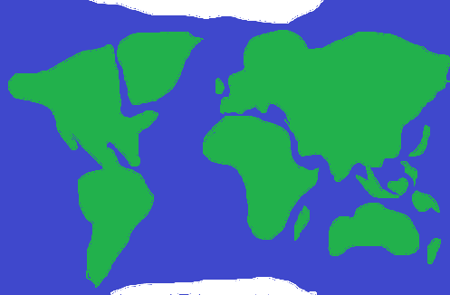
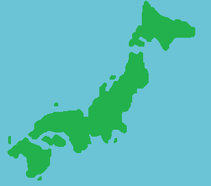

International Noodles
Interactive Map
To learn more about food from around the world click on a country. (Under Construction)
 Japan
- Japan has a special type of fried vegetables known as tempura.
- Many ramen restaurant owners want customers to slurp noodles to get a full ramen experience.
- Japanese vending machines will provide heated meals by using the heat from the vending machine to heat up the food.
- Yoshoku is a Japanese food style that combines foreign food with Japanese preferences and culinary style.
- Sushi is the most popular dish in Japan and comes in several forms, most commonly as rolls or sashimi.
- Plastic food models have become a very popular gift item and souvenir in modern Japanese culture.